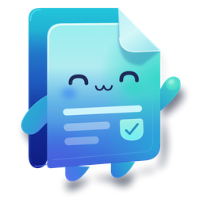

Dokuwu Privacy Policy
English
Dokuwu (“the app”) is a desktop application that processes PDF and image files on your own computer. This policy explains what the app does and does not do with your information.
No data collection. The app does not collect, store, transmit or sell personal information. It has no user accounts, analytics, advertising, crash reporting or telemetry.
Your files stay on your device. Files you open are processed entirely on your PC by components bundled with the app. To let its interface talk to its processing engine, the app runs a small service that listens only on your own computer (127.0.0.1). Nothing is sent to the internet.
Files the app creates. Finished files are saved to your Downloads folder. While you work, the app keeps temporary working copies in a PDFManager folder inside your user folder (for example C:\Users\<you>\PDFManager\temp and \output); these are cleared when the app starts and closes. Fonts you add to the font library are kept in PDFManager\data until you remove them. Your language and theme choices are kept in the app’s local storage on your device. Uninstalling the app removes the app itself; files you saved are not deleted, and you may delete the PDFManager folder at any time.
Internet access. The app does not need an internet connection. The only time it opens anything online is when you choose the optional donation link or the project page, which open in your default web browser (the donation link opens a PayPal page, governed by PayPal’s own privacy policy). The app itself sends no data to those sites.
Children. The app does not knowingly collect information from anyone, including children.
Changes. If this policy changes, the updated version will be published at this address with a new effective date.
Contact. Questions about this policy: open an issue at github.com/hubble99/pdf-manager/issues.
Bahasa Indonesia
Dokuwu (“aplikasi”) adalah aplikasi desktop yang memproses file PDF dan gambar di komputer Anda sendiri. Kebijakan ini menjelaskan apa yang dilakukan dan tidak dilakukan aplikasi terhadap informasi Anda.
Tidak ada pengumpulan data. Aplikasi tidak mengumpulkan, menyimpan, mengirim, atau menjual informasi pribadi. Tidak ada akun pengguna, analitik, iklan, laporan crash, atau telemetri.
File Anda tetap di perangkat Anda. File yang Anda buka diproses sepenuhnya di PC Anda oleh komponen yang disertakan dalam aplikasi. Agar antarmuka dapat berkomunikasi dengan mesin pemrosesnya, aplikasi menjalankan layanan kecil yang hanya mendengarkan di komputer Anda sendiri (127.0.0.1). Tidak ada yang dikirim ke internet.
File yang dibuat aplikasi. File hasil disimpan ke folder Downloads Anda. Selama Anda bekerja, aplikasi menyimpan salinan kerja sementara di folder PDFManager di dalam folder pengguna Anda (misalnya C:\Users\<nama>\PDFManager\temp dan \output); isinya dibersihkan saat aplikasi dibuka dan ditutup. Font yang Anda tambahkan ke pustaka font disimpan di PDFManager\data sampai Anda menghapusnya. Pilihan bahasa dan tema disimpan di penyimpanan lokal aplikasi pada perangkat Anda. Menghapus instalasi aplikasi hanya menghapus aplikasinya; file yang sudah Anda simpan tidak ikut terhapus, dan folder PDFManager dapat Anda hapus kapan saja.
Akses internet. Aplikasi tidak memerlukan koneksi internet. Aplikasi hanya membuka sesuatu secara online jika Anda memilih tautan donasi opsional atau halaman proyek, yang terbuka di browser bawaan Anda (tautan donasi membuka halaman PayPal, yang tunduk pada kebijakan privasi PayPal). Aplikasi sendiri tidak mengirim data ke situs tersebut.
Anak-anak. Aplikasi tidak dengan sengaja mengumpulkan informasi dari siapa pun, termasuk anak-anak.
Perubahan. Jika kebijakan ini berubah, versi terbaru akan dipublikasikan di alamat ini dengan tanggal berlaku yang baru.
Kontak. Pertanyaan tentang kebijakan ini: buat isu di github.com/hubble99/pdf-manager/issues.